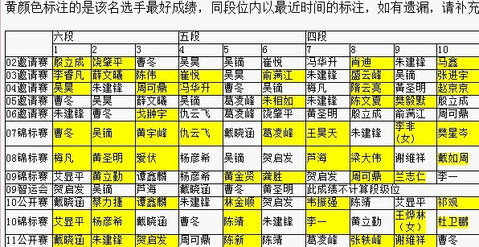

十番棋——骨灰级研究者约战实战高手(全国前十)
#1 十番棋——骨灰级研究者约战实战高手(全国前十) 作者：天涯独行客 发表时间：2011-6-22 21:12:04
我——天涯独行客进入五子棋界十余年，一向以研究为爱好，终结为乐趣。
特于此约战实战高手，望有兴趣者成全！
规则：山口规则（允许妖刀的山口规则）
时间：一步棋最多2天，一盘棋每方最长期限30天
有愿意者请跟帖，确认后即开始，对规则有何异议，也可以商量
不好意思地补充一句：我约战的实战高手，要求是全国比赛个人前十级别的啊，呵呵，本人孤陋寡闻，没有见过世面，希望体会一下高山仰止的感觉
［此帖子已被 天涯独行客 在 2011-6-22 21:12:31 编辑过］
［ 家族粉丝 于 2011-6-22 21:30:41 时花20金币送鲜花一朵］
［ 失落刀 于 2011-6-22 21:36:07 时花20金币送鲜花一朵］
［此帖子已被 天涯独行客 在 2011-6-22 22:33:35 编辑过］
［此帖子已被 天涯独行客 在 2011-6-22 22:35:08 编辑过］
［ gerbo 于 2011-6-23 0:06:01 时花20金币送鲜花一朵］
#2 Re:十番棋——骨灰级研究者约战实战高手 作者：家族粉丝 发表时间：2011-6-22 21:24:24
据说：第一个开贴十番棋的两位棋手分别送一威望、一鲜花、500金。
第一个十番棋，我们也可以竞猜撒，
猜比分0:10~~~10:0
［此帖子已被 家族粉丝 在 2011-6-22 21:24:53 编辑过］
#3 Re:十番棋——骨灰级研究者约战实战高手 作者：怪 发表时间：2011-6-22 21:32:44
既然是番棋制，希望能赌威望，不然实在无压力，对局质量未必能有多高。
最好胜方能得到输方的1，2个威望，然后没多赢一局再多得一个败方的威望。10盘必须要全部完成，不完成的扣威望。直至败方威望为5（很多活动要求5威望的底线）。
这样也是促进网友争取多争取威望来玩十番棋。
#4 Re:十番棋——骨灰级研究者约战实战高手 作者：失落刀 发表时间：2011-6-22 21:35:51
1楼和3楼如果互相同意，则版主采纳。
因属于有可能的第一个十番棋，双方若某一方威望扣完则可以申请扣罚担保人威望。
大家继续讨论。
#5 Re:十番棋——骨灰级研究者约战实战高手 作者：天涯独行客 发表时间：2011-6-22 21:36:01
对不起，我从来不沾一个赌字，不管什么形式的#6 Re:十番棋——骨灰级研究者约战实战高手 作者：怪 发表时间：2011-6-22 21:43:57
 不能简单的理解成是赌博那种不良恶习。那些历史上的棋手的十番棋何尝不是把他的人生的未来压在那十番棋上呢，我的提议只是想说给棋局增加点价值。这样就会减少出现一方由于一些简单的理由就放弃棋局了的情况。另外，我不是想参加这局十番棋。。。只是提点建议。
不能简单的理解成是赌博那种不良恶习。那些历史上的棋手的十番棋何尝不是把他的人生的未来压在那十番棋上呢，我的提议只是想说给棋局增加点价值。这样就会减少出现一方由于一些简单的理由就放弃棋局了的情况。另外，我不是想参加这局十番棋。。。只是提点建议。
#7 Re:十番棋——骨灰级研究者约战实战高手 作者：天涯独行客 发表时间：2011-6-22 22:21:29
不沾赌字，是个人个性喜好，没有那么复杂#8 Re:十番棋——骨灰级研究者约战实战高手 作者：第五象限 发表时间：2011-6-22 22:29:15
很好奇天涯独行客是哪位大神#9 Re:十番棋——骨灰级研究者约战实战高手 作者：踵酃 发表时间：2011-6-22 22:30:11
十番棋，十个威望做为代价。胜者拿走对方全部的10个威望。
#10 Re:十番棋——骨灰级研究者约战实战高手 作者：第五象限 发表时间：2011-6-22 22:30:25
另外任何人都可以发约战贴么？#11 Re:十番棋——骨灰级研究者约战实战高手 作者：踵酃 发表时间：2011-6-22 22:32:36
 同样只是提议
同样只是提议
#12 Re:十番棋——骨灰级研究者约战实战高手(全国前十) 作者：踵酃 发表时间：2011-6-22 22:35:40
要挑战全国实战前10来比论坛战
有谁把全国前十的名字摆出来？
#13 Re:十番棋——骨灰级研究者约战实战高手(全国前十) 作者：天涯独行客 发表时间：2011-6-22 22:38:30
只要获得过全国赛前十的就行#14 Re:十番棋——骨灰级研究者约战实战高手(全国前十) 作者：天涯独行客 发表时间：2011-6-22 22:40:51
论坛战下的棋太多，太耗时间，呵呵，我没有那么多的精力#15 Re:十番棋——骨灰级研究者约战实战高手(全国前十) 作者：踵酃 发表时间：2011-6-22 22:42:51

以上是符合楼主要求的人物名单
祝楼主挑战成功
#16 Re:十番棋——骨灰级研究者约战实战高手(全国前十) 作者：第五象限 发表时间：2011-6-22 22:44:00
可是全国比赛个人前十级别的干嘛要来应战呢？#17 Re:十番棋——骨灰级研究者约战实战高手(全国前十) 作者：天涯独行客 发表时间：2011-6-22 22:44:15
谢谢，呵呵，可能是痴人说梦，没人愿意应战啊#18 Re:十番棋——骨灰级研究者约战实战高手(全国前十) 作者：踵酃 发表时间：2011-6-22 22:47:49
楼主，你把你下棋的简历发出来，让他们知道跟你对战是值得的。
#19 Re:十番棋——骨灰级研究者约战实战高手(全国前十) 作者：天涯独行客 发表时间：2011-6-22 22:51:42
呵呵，真是全国前十，应该不可能不知道我吧，毕竟也是骨灰级的老人了#20 Re:十番棋——骨灰级研究者约战实战高手(全国前十) 作者：怪 发表时间：2011-6-22 22:52:56
你把他们都吓跑了。。
#21 Re:十番棋——骨灰级研究者约战实战高手(全国前十) 作者：踵酃 发表时间：2011-6-22 22:56:47
群众表示不认识你,揭开你的甲壳,让我们认识认识.
#22 Re:十番棋——骨灰级研究者约战实战高手(全国前十) 作者：天涯独行客 发表时间：2011-6-22 22:59:22
呵呵，你问问那些老人就知道了#23 Re:十番棋——骨灰级研究者约战实战高手(全国前十) 作者：猪小弟 发表时间：2011-6-22 23:00:06
这些大都是实战型的棋手，也许大多数精力都放在备战智运会上呢。再说了，实战高手和网战高手之间是不能划等号的#24 Re:十番棋——骨灰级研究者约战实战高手(全国前十) 作者：踵酃 发表时间：2011-6-22 23:01:14
 老人说了: 原来你就是传说中的"空恨" 大师.
老人说了: 原来你就是传说中的"空恨" 大师.
#25 Re:十番棋——骨灰级研究者约战实战高手(全国前十) 作者：天涯独行客 发表时间：2011-6-22 23:06:29
呵呵，空恨小弟吗？有些年头没有出来了#26 Re:十番棋——骨灰级研究者约战实战高手(全国前十) 作者：天涯独行客 发表时间：2011-6-22 23:08:39
我就是我，十几年了从来没有改过名，也没有匿过名#27 Re:十番棋——骨灰级研究者约战实战高手(全国前十) 作者：自来水 发表时间：2011-6-22 23:19:06
那你应该也知道那些人在网上都是谁的。
人家是否应战你也可以自己估计下。。
#28 Re:十番棋——骨灰级研究者约战实战高手(全国前十) 作者：絕版賭徒 发表时间：2011-6-22 23:23:32
挑两个
冬妮VS棋情
玉儿VS小天
［ 高飞 于 2011-6-24 11:48:05 时花20金币送鲜花一朵］
#29 Re:十番棋——骨灰级研究者约战实战高手(全国前十) 作者：陈唯一 发表时间：2011-6-22 23:26:57
问问LZ有没有进过前十？是不是没进过前十的就水平弱？是不是没参加过比赛的就不会下棋？你值得前十的人和你下棋吗？［ 锐 于 2011-6-29 16:12:30 时花20金币送鲜花一朵］
#30 Re:十番棋——骨灰级研究者约战实战高手(全国前十) 作者：华夏使者 发表时间：2011-6-22 23:35:00
曾老师你们都不认识啊？你们简直。。。。。哎~#31 Re:十番棋——骨灰级研究者约战实战高手(全国前十) 作者：踵酃 发表时间：2011-6-22 23:44:58
回29楼, 人家希望挑战的标准有其理由的,并不是说其他人不强或不好.
#32 Re:十番棋——骨灰级研究者约战实战高手(全国前十) 作者：gerbo 发表时间：2011-6-22 23:48:16
欢迎天涯老师出山~~~！！
#33 Re:十番棋——骨灰级研究者约战实战高手(全国前十) 作者：菜包先生 发表时间：2011-6-23 0:02:28
人肉搜索结果如下：
天涯独行客
曾飞戈
男
35-45之间
湖南省冷水江市人
参加过一次实战比赛，2010个人锦标赛第37名
长期致力于少儿五子棋培训工作，在少儿五子棋培训方面很有心得。
据他自己说他儿子曾一江小盆友有男人成人组全国前10的实力。
据说他曾终结过几个开局。哪些开局不详
据说是2009年首届智力运动会湖南队的教练（是否真实不详）
据说是2011年第二届智力运动会湖南女子队的教练（是否真实不详）
经接触发现他的优点如下：
很搞笑，很自信。比较能呼优。修养较高，基本上做到了打不还手，骂不还嘴的境界（不信的可以试试）
缺点：基本没有缺点，非得挑刺的话，可能过于搞笑，过于自信，过于能呼优，过于修养高吧
家底：传闻棋谱超过1TB
另外：记得你说过第一届智运会湖南选拔赛是你个人掏的腰包，我记得那次是蓝天幼儿园冠名的吧，应该是蓝天幼儿园掏的腰包，求解释
估计全国前十的盆友不会接受你的挑战。他们可能直接挑战你儿子曾一江去了。。。
［ gerbo 于 2011-6-23 0:04:15 时花20金币送鲜花一朵］
［ gerbo 于 2011-6-23 0:04:28 时花20金币送鲜花一朵］
［ gerbo 于 2011-6-23 0:04:40 时花20金币送鲜花一朵］
［ gerbo 于 2011-6-23 0:04:51 时花20金币送鲜花一朵］
［ gerbo 于 2011-6-23 0:05:03 时花20金币送鲜花一朵］
［ gerbo 于 2011-6-23 0:05:16 时花20金币送鲜花一朵］
［ 华夏使者 于 2011-6-23 0:05:18 时花20金币送鲜花一朵］
［ gerbo 于 2011-6-23 0:05:29 时花20金币送鲜花一朵］
［ gerbo 于 2011-6-23 0:05:50 时花20金币送鲜花一朵］
［ 絕版賭徒 于 2011-6-23 0:14:05 时花20金币送鲜花一朵］
［ 絕版賭徒 于 2011-6-23 0:15:54 时花20金币送鲜花一朵］
［ 絕版賭徒 于 2011-6-23 0:16:09 时花20金币送鲜花一朵］
［ 讲五堂笑天 于 2011-6-29 3:09:13 时花20金币送鲜花一朵］
#34 Re:Re:十番棋——骨灰级研究者约战实战高手(全国前十) 作者：屏蔽 发表时间：2011-6-23 0:09:32
引用：
原文由 天涯独行客 发表于 2011-6-22 22:51:42 :
呵呵，真是全国前十，应该不可能不知道我吧，毕竟也是骨灰级的老人了
新人求认识。
#35 Re:Re:十番棋——骨灰级研究者约战实战高手(全国前十) 作者：屏蔽 发表时间：2011-6-23 0:10:37
引用：
原文由 踵酃 发表于 2011-6-22 22:42:51 :以上是符合楼主要求的人物名单
祝楼主挑战成功
其实09年全国赛我第九……
#36 Re:十番棋——骨灰级研究者约战实战高手(全国前十) 作者：随心而欲 发表时间：2011-6-23 3:41:19
连珠第1精神分裂#37 Re:十番棋——骨灰级研究者约战实战高手(全国前十) 作者：自来水 发表时间：2011-6-23 5:58:56

#38 Re:十番棋——骨灰级研究者约战实战高手(全国前十) 作者：用心学习 发表时间：2011-6-23 7:45:03
包哥 爆尿很彻底啊
#39 Re:十番棋——骨灰级研究者约战实战高手(全国前十) 作者：黄药师 发表时间：2011-6-23 7:58:47
09年和楼主在浙江有一面之缘！
曾一江小朋友也很可爱！
依稀记得小曾追着我们的施令驰小朋友满餐厅飞奔的样子！
#40 Re:十番棋——骨灰级研究者约战实战高手(全国前十) 作者：天涯独行客 发表时间：2011-6-23 8:48:10
答菜包先生：
1、本人从未说过我儿子曾一江有过全国成年男子前十水准，至于他是否具有和成年人高手抗衡的实力，我相信你应该有切身体会。像他这样实力的少年儿童棋手，我的弟子中至少有7、8个，前年你也亲眼见过，所以说他根本不算什么。
2、第一届智运会的选拔赛是由蓝天教育集团的名义赞助，而我本人当时就是蓝天综合素质培训学校的校长，我和集团是合作关系，学校是我独立经营、自负盈亏的，那一年我上缴集团利润近十万，你说这钱是谁出的？说句老实话，如果不是因为他们答应承办这次选拔赛，我还根本不会答应和他们集团合作，当这个鬼校长，那一年我一天上课最多达十四个小时，等于是帮他们集团卖了一年苦力。
3、至于那次选拔赛，没收报名费，吃住全免，我和我学校的工作人员放下所有工作，全程陪护招待，菜包先生应该不会忘记吧！
4、我确实没有参加过什么实战比赛，一次全国比赛（应省棋协要求，体验实战感觉），一次省内选拔赛（凑个数，几乎每盘棋下到瞌睡，赛事所有琐事都是我在操心）。
5、至于我终结过什么开局，我只能说别人能终结的，我肯定都有谱，而且都是我亲手按我自己的标志体系和终结习惯做的。别人不能终结的，你别问，我也不会说。本届智运会湖南省队的队员中至少应该有3、4个是我的弟子或许还会包括我自己，赛场上大家自己去体会。
［ 黄药师 于 2011-6-23 11:35:48 时花20金币送鲜花一朵］
#41 Re:十番棋——骨灰级研究者约战实战高手(全国前十) 作者：华夏使者 发表时间：2011-6-23 9:00:48
湖南省打智运会前不是有个选拔吗？参加选拔的都是你弟子？#42 Re:十番棋——骨灰级研究者约战实战高手(全国前十) 作者：华夏使者 发表时间：2011-6-23 9:09:53
这话好象是你前一个回贴里面说的，难道有内幕？#43 Re:十番棋——骨灰级研究者约战实战高手(全国前十) 作者：踵酃 发表时间：2011-6-23 9:11:34
 看来确实是个大人物，
看来确实是个大人物，
全国前10要是不来应战就太不给面子了哦，呵呵
#44 Re:Re:十番棋——骨灰级研究者约战实战高手(全国前十) 作者：菜包先生 发表时间：2011-6-23 9:15:14
引用：
原文由 天涯独行客 发表于 2011-6-23 8:48:10 :答菜包先生：
。别人不能终结的，你别问，我也不会说。
哥没打算问。。。
至于蓝天集团的事，既然冠名了，那就不是你掏的腰包。我现在还是这么理解。
#45 Re:Re:Re:十番棋——骨灰级研究者约战实战高手(全国前十) 作者：死劲哭 发表时间：2011-6-23 10:50:22
引用：
原文由 菜包先生 发表于 2011-6-23 9:15:14 :引用：菜包大师别太认真了，可能每个人都需要一个宣泄的途径吧。体谅吧！
原文由 天涯独行客 发表于 2011-6-23 8:48:10 :答菜包先生：
。别人不能终结的，你别问，我也不会说。
哥没打算问。。。
至于蓝天集团的事，既然冠名了，那就不是你掏的腰包。我现在还是这么理解。
#46 Re:十番棋——骨灰级研究者约战实战高手(全国前十) 作者：天涯独行客 发表时间：2011-6-23 11:36:58
呵呵，说起09浙江全国青少年赛，依稀在目，曾一江和施令驰大战100多手，最后因为一个简单的冲四没挡，结果输了，本来是和棋的。
第一轮对宁波的李时帧，对手形势已经不利，提和，曾一江绝对已经是朋友了，对手提和如果不答应，觉得不礼貌，结果就答应了，闹了个大笑话，事后被我批评，呵呵，所以对施令驰时就不敢答应和棋了，结果反而输了，呵呵
孩子毕竟是孩子，第一次参赛，闹了很多笑话，输了太多不该输的棋
［ 黄药师 于 2011-6-23 12:03:15 时花20金币送鲜花一朵］
#47 Re:十番棋——骨灰级研究者约战实战高手(全国前十) 作者：天涯独行客 发表时间：2011-6-23 11:41:41
湖南锦标赛有几十人参加，正式注册的有24个，但有实力的肯定就那么几个
蓝天集团我也是当时的老板之一，占50%的股份，具体的承办和组织，都是我自己的综合学校在搞，怎么不能说是我自己掏的腰包呢
#48 Re:Re:十番棋——骨灰级研究者约战实战高手(全国前十) 作者：死劲哭 发表时间：2011-6-23 11:59:50
引用：唉！ 老前辈这个话题别再继续了吧。‘个人’指的是法律意义上的自然人；而企业、团体或者组织是法律意义上的法人。两者是有本质上区别的。 不要说你50%的股份，即便你100%的控股，你的身份也只能是法人代表。说到底还是法人行为，而非个人行为。
原文由 天涯独行客 发表于 2011-6-23 11:41:41 :湖南锦标赛有几十人参加，正式注册的有24个，但有实力的肯定就那么几个
蓝天集团我也是当时的老板之一，占50%的股份，具体的承办和组织，都是我自己的综合学校在搞，怎么不能说是我自己掏的腰包呢
［ 菜包先生 于 2011-6-24 0:41:07 时花20金币送鲜花一朵］
#49 Re:十番棋——骨灰级研究者约战实战高手(全国前十) 作者：就是爱玩 发表时间：2011-6-23 12:11:06
有啥争执的，每次上来看到的除了吵就是吵，试问一下若五子棋爱好者都是这样，那么五子棋的发展只有等到驴年了。
本帖中楼主只是想找一个全国前10的对手进行番棋大战，如此而已，有不明白这个意思的人吗？
［ 我就不信注册不上 于 2011-6-23 12:13:33 时花20金币送鲜花一朵］
#50 Re:十番棋——骨灰级研究者约战实战高手(全国前十) 作者：浩瀚铭剑 发表时间：2011-6-23 12:21:51
5、至于我终结过什么开局，我只能说别人能终结的，我肯定都有谱，而且都是我亲手按我自己的标志体系和终结习惯做的。别人不能终结的，你别问，我也不会说。本届智运会湖南省队的队员中至少应该有3、4个是我的弟子或许还会包括我自己，赛场上大家自己去体会。
我想知道最后一句话的意思 还在不在韶山举办选拔比赛啊？
还在不在韶山举办选拔比赛啊？
如果在韶山选拔一节皆有可能
#51 Re:十番棋——骨灰级研究者约战实战高手(全国前十) 作者：罔两 发表时间：2011-6-23 12:28:48
好像我可以有时间参加选拔赛！！
包子还有那些猪会去呀？任为、思过他们会去嘛？
#52 Re:十番棋——骨灰级研究者约战实战高手(全国前十) 作者：浩瀚铭剑 发表时间：2011-6-23 12:31:44
木猪你请我吃饭，我就先呆在学校陪你们一起去。。。不请我吃饭就算了 韶山哥还是熟悉 毕竟韶山那边修的高铁路线我们导师带我们去哪里过，玩了几天 不请我吃饭我就不去
#53 Re:Re:十番棋——骨灰级研究者约战实战高手(全国前十) 作者：我就不信注册不上 发表时间：2011-6-23 12:38:06
引用：顶一下，楼主就这么简单的想找一个实战全国前十的，至于言外之意，谁也揣摩不了。喜欢绿色的人不一定鄙视蓝色，只是自己喜好而已，吵那么多只能说明你对自己喜欢的蓝色不自信
原文由 就是爱玩 发表于 2011-6-23 12:11:06 :有啥争执的，每次上来看到的除了吵就是吵，试问一下若五子棋爱好者都是这样，那么五子棋的发展只有等到驴年了。
本帖中楼主只是想找一个全国前10的对手进行番棋大战，如此而已，有不明白这个意思的人吗？
［ 我就不信注册不上 于 2011-6-23 12:13:33 时花20金币送鲜花一朵］
#54 Re:十番棋——骨灰级研究者约战实战高手(全国前十) 作者：华夏使者 发表时间：2011-6-23 12:39:42
做为一个湖南人，我为湖南五子棋的发展感到担忧。#55 Re:Re:十番棋——骨灰级研究者约战实战高手(全国前十) 作者：第五象限 发表时间：2011-6-23 13:08:15
引用：担忧什么？
原文由 华夏使者 发表于 2011-6-23 12:39:42 :
做为一个湖南人，我为湖南五子棋的发展感到担忧。
#56 Re:十番棋——骨灰级研究者约战实战高手(全国前十) 作者：天涯独行客 发表时间：2011-6-23 15:06:27
湖南省的智运会选拔赛暨湖南省五子棋锦标赛在韶山举行，已经是确定了，时间7月16-17日
#57 Re:Re:十番棋——骨灰级研究者约战实战高手(全国前十) 作者：华夏使者 发表时间：2011-6-23 15:28:24
你回湖南了吗？#58 Re:Re:十番棋——骨灰级研究者约战实战高手(全国前十) 作者：华夏使者 发表时间：2011-6-23 15:31:14
引用：你回湖南了吗
原文由 罔两 发表于 2011-6-23 12:28:48 :好像我可以有时间参加选拔赛！！
包子还有那些猪会去呀？任为、思过他们会去嘛？
#59 Re:十番棋——骨灰级研究者约战实战高手(全国前十) 作者：罔两 发表时间：2011-6-23 20:02:00
7月份会休假，应该会回湖南。到时候看吧，时间可以到时候我去玩玩！！#60 Re:十番棋——骨灰级研究者约战实战高手(全国前十) 作者：三国老凯 发表时间：2011-6-23 21:23:56
 那个四三啊
那个四三啊
#61 Re:十番棋——骨灰级研究者约战实战高手(全国前十) 作者：天涯独行客 发表时间：2011-6-23 22:32:00
愿意去的，吃饭我请客，呵呵，欢迎大家多来交流#62 Re:Re:十番棋——骨灰级研究者约战实战高手(全国前十) 作者：菜包先生 发表时间：2011-6-24 0:38:03
引用：
原文由 罔两 发表于 2011-6-23 12:28:48 :好像我可以有时间参加选拔赛！！
包子还有那些猪会去呀？任为、思过他们会去嘛？
无聊应该会去，极地，思过，任为，曾方都报了名。其它的基本是大学生和小盆友吧，估计你不认识。
#63 Re:Re:十番棋——骨灰级研究者约战实战高手(全国前十) 作者：菜包先生 发表时间：2011-6-24 0:40:11
引用：韶山他应该比你熟悉。。。
原文由 浩瀚铭剑 发表于 2011-6-23 12:31:44 :木猪你请我吃饭，我就先呆在学校陪你们一起去。。。不请我吃饭就算了 韶山哥还是熟悉 毕竟韶山那边修的高铁路线我们导师带我们去哪里过，玩了几天
#64 Re:十番棋——骨灰级研究者约战实战高手(全国前十) 作者：极地剑客 发表时间：2011-6-24 0:58:21
名贱在湖南读书？俺还以为在成都列#65 Re:十番棋——骨灰级研究者约战实战高手(全国前十) 作者：用心学习 发表时间：2011-6-24 7:20:24
浩瀚铭剑 是哪个啊 我不认识 有木有解释一下的
有木有解释一下的
#66 Re:十番棋——骨灰级研究者约战实战高手(全国前十) 作者：小帮帮 发表时间：2011-6-24 10:53:59
碌碌无为地下了10年棋的新人飘过---------
#67 Re:十番棋——骨灰级研究者约战实战高手(全国前十) 作者：小元 发表时间：2011-6-24 14:11:59
期待这个帖子没关闭之前有全国赛前10的人愿意接受LZ的挑战。#68 Re:十番棋——骨灰级研究者约战实战高手(全国前十) 作者：死劲哭 发表时间：2011-6-24 15:51:46
估计不会有‘达标’的人来做这种事的，当然也不完全排除哪位童心未泯#69 Re:十番棋——骨灰级研究者约战实战高手(全国前十) 作者：天涯独行客 发表时间：2011-6-28 18:13:06
不就是个交流吗？不知为什么，大家总要弄出现其他的意味呢？
其实很简单，我一直喜欢研究，喜欢终结，很少关注实战，现在对实战有了兴趣，希望和实战高手交流一下对局面的分析把握方式，研究型的思维和实战型思维进行碰撞，应该也是很有意思的事。
#70 Re:十番棋——骨灰级研究者约战实战高手(全国前十) 作者：絕版賭徒 发表时间：2011-6-28 18:35:45
我弱弱的请教一下X个关于骨灰级的问题:
1,骨灰级研究者的含义是什么?
2,中国五子棋有哪些骨灰级研究者?
3, 骨灰级研究者是谁封的?
4,自封骨灰级的研究者有多少?
5,为什么要自封骨灰级?
6,自封骨灰级有什么意义?
想了好多天,没想明白,呵呵,有劳骨灰级楼主给予答得,感激涕零~!
［此帖子已被 絕版賭徒 在 2011-6-28 18:36:55 编辑过］
#71 Re:十番棋——骨灰级研究者约战实战高手(全国前十) 作者：gerbo 发表时间：2011-6-28 18:54:24
前面一直看你们不听的解释法人、个人，请问下：中国首善陈光标的裸捐行为是法人行为还是个人行为，如何判断？
#72 Re:十番棋——骨灰级研究者约战实战高手(全国前十) 作者：天涯独行客 发表时间：2011-6-29 0:24:33
骨灰级，纯属自封，因为本人进入连珠界一直就是以研究为乐趣，历时十几年，每天N小时，不管春夏秋冬极少间断。自封骨灰级，并无任何实质性意义，不过以此表明自己的实际情况。换句通俗易懂的说法，就是一个以研究为乐趣的爱好者，想找个实战高手交流交流，仅此而已
至于连珠界有多少骨灰级研究者，非我所能了解，也不是我所感兴趣的。
#73 Re:十番棋——骨灰级研究者约战实战高手(全国前十) 作者：讲五堂笑天 发表时间：2011-6-29 3:18:07
天天这么研究，全国赛不进前十我有点为你打抱不平。我觉得你都应该得冠军，菜包兄你不要打击人家，此仁兄的确是高手，我佩服、#74 Re:十番棋——骨灰级研究者约战实战高手(全国前十) 作者：菜包先生 发表时间：2011-6-29 8:27:03
天涯，同为湖南娄底人，哥在退出江湖之前奉劝你一句：名气和实力是打出来的，而不是厚颜无耻地吹出来的。
也不是通过使一些小伎俩，让你的弟子参加过几次几次智运会就可以拿出来作为吹嘘的本钱。
更不是靠诋毁别人就能提高自己的名气和实力。
也不是把棋院彭老头呼优住了，你的名气和实力就上去了。
踏实做点事吧，或者拼命提高水平后再吹，或者一心一意做好培养工作，一样能赢得别人的尊敬。
我说的很难听，但都是实话，也算是一个善意的提醒吧。
或许你会找一大堆理由来反驳我，从此我不会再在爱五子棋网发表任何言论了。我说的是不是事实，你心里有数，湖南连珠的每一位棋手心里都有数。
希望下次别人谈起天涯独行客的时候，我可以骄傲地告诉别人，天涯独行客是我们娄底人，和我相距只有100公里。
而不是现在这样，别人一问天涯独行客是娄底的吗？我只能这样说：他是冷水江的，只属于娄底地区。和我相隔100多公里！！
最后祝你和你的儿子，你的学生在智运会取得好的成绩。为湖南争光。
-----菜包爱五子棋网绝笔
［此帖子已被 菜包先生 在 2011-6-29 8:28:52 编辑过］
［ 嗯嗯嗯 于 2011-7-16 14:04:36 时花20金币送鲜花一朵］
#75 Re:十番棋——骨灰级研究者约战实战高手(全国前十) 作者：用心学习 发表时间：2011-6-29 10:30:02
对于包哥的离去深表遗憾
#76 Re:十番棋——骨灰级研究者约战实战高手(全国前十) 作者：天涯独行客 发表时间：2011-6-29 15:01:02
对于菜包兄的言论，我不做任何解释，这么多年的付出，事实摆在那里，功过自有人评说。
欢迎大家来湖南，欢迎大家来参加湖南的棋类活动！公道自在人心！
#77 Re:十番棋——骨灰级研究者约战实战高手(全国前十) 作者：用心学习 发表时间：2011-6-29 15:20:32
欢迎大家来参加湖南的棋类活动！
#78 Re:十番棋——骨灰级研究者约战实战高手(全国前十) 作者：用心学习 发表时间：2011-6-29 15:28:51
在爱五子棋网上也玩了3年多啦 还真没听说过湖南搞了啥棋类活动。（貌似有个啥元旦节聚会吧）
#79 Re:十番棋——骨灰级研究者约战实战高手(全国前十) 作者：锐 发表时间：2011-6-29 16:26:59
曾经有人说，被狗咬了难道咬回去吗？对于菜包同学的绝笔，是相当明智的举动！群众的眼睛是雪亮的！！！
#80 Re:十番棋——骨灰级研究者约战实战高手(全国前十) 作者：天涯独行客 发表时间：2011-6-29 16:34:01
请别用耳朵道听途说或者凭空想象，请用你睿智的眼睛去看，用你真诚地心去感受，诚恳地欢迎你来实地考察，欢迎你找湖南的有关的人士进行了解。
目前我们的活动确实做得并不怎么样，但我们毕竟在努力，也欢迎你的参与和指导。
暑假期间，从7月份开始，我家里每天上午开展棋类交流训练活动，由在湖南长沙的棋友（包括大学生、青少年、成年人）参加，也欢迎外地来湘的棋手参加，暑假期间在望月湖第二小学我开办了为期一个月的五子棋训练班，每天下午上课。我不在家，大家也可继续玩，我儿子会做好小主人的接待工作。中午提供免费午餐，品尝我或我儿子的手艺，也欢迎大家露一手。
我在长沙的地址：长沙市芙蓉区火星镇紫薇路192号8栋203，电话：13974913416 QQ：99563253
［此帖子已被 天涯独行客 在 2011-6-29 16:35:24 编辑过］